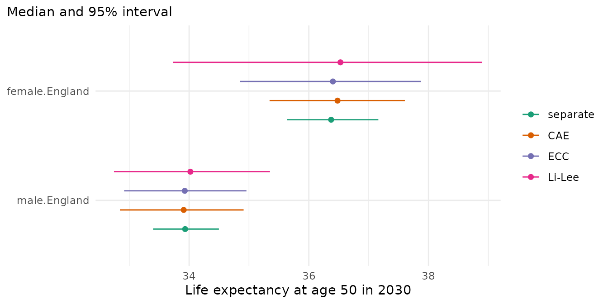

Forecasts for groups of a population, such as sexes, regions or deprivation quintiles, are often combined: into totals over the groups, into gaps between them and into measures of inequality. The uncertainty of these combinations depends on how the forecasts of the groups move together. This vignette shows why, describes the two ways in which mortensor gives forecasts of several groups their dependence, and compares them on the deprivation quintiles of England.
Why dependence matters
A forecast is a set of draws, each a possible future of all groups. The interval of a total comes from the totals of the draws, and the interval of a gap from the gaps of the draws. For two groups A and B,
- Var(A + B) = Var(A) + Var(B) + 2 Cov(A, B),
- Var(A - B) = Var(A) + Var(B) - 2 Cov(A, B).
The mortality of groups in one country often moves together: medical progress, epidemics and cold winters reach all of them. Their forecast errors are then positively correlated. Separate models, one per group, draw the future of each group independently, so the covariance of their draws is zero. Totals then get intervals that are too narrow, and gaps get intervals that are too wide. Where groups move in opposite directions, the covariance is negative and the errors are reversed: totals get intervals that are too wide and gaps intervals that are too narrow. The forecast of each group on its own does not depend on the other groups; dependence matters for quantities computed from several groups.
Joint models
Joint models fit all groups together. Their draws carry the dependence of the model.
-
li_lee()(Li and Lee 2005): an age pattern and a period index common to all groups, and a deviation of each group whose period index follows an AR(1) process. The deviations return to their mean over the fitting years, so the forecasts of the groups stay together (coherent forecasts), and the common index makes them move together. -
coherent_fdm()(Hyndman, Booth and Yasmeen 2013): the product-ratio method. The geometric mean of the groups follows a time-series model, and the ratio of each group to it is a stationary process. -
cae()(Kleinow 2015): the common age effect model. All groups share their age effects, and each group has its own period effects, estimated with the same weight for every group. Kleinow (2015) does not forecast. In mortensor the period effects of all groups follow one random walk with drift whose innovations are correlated between the groups (a package-specific choice, see?cae). Each group keeps its own drift, so the forecasts of the groups can drift apart.
Coupling separate forecasts
Sometimes a separate model per group gives the best forecast of each group, but its draws are independent. Ensemble copula coupling (ECC; Schefzik, Thorarinsdottir and Gneiting 2013) keeps the forecast of each cell (an age, a year and a group) of such a base model and takes the dependence from the draws of a joint model, the template. In each cell the values of the base model are sorted and handed to the draws in the order of the template: the draw in which the template is lowest receives the lowest value of the base model, and so on. Five draws of one cell:
base <- c(0.012, 0.010, 0.011, 0.014, 0.013)
template <- c(0.021, 0.025, 0.019, 0.022, 0.020)
sort(base)[rank(template)]
#> [1] 0.012 0.014 0.010 0.013 0.011Each cell keeps exactly the values of the base model. The draws as a
whole take the ranks of the template, between groups, between ages and
between years. coupled(lee_carter(), template = cae())
couples inside a model,
reconciled(..., dependence = "ecc", template = cae())
couples before reconciling, and mt_couple() couples two
sets of forecast draws.
The Schaake shuffle (Clark et al. 2004) reorders the draws in the
same way, with the ranks of past observations in place of a model’s
draws. With reconciled(..., dependence = "schaake"), the
template of a cell in forecast year h holds the observed
changes of its log rate over h years from several distinct
training years, the same years for all groups and ages. Five draws of
one cell and the observed changes from five training years:
past <- c(-0.031, -0.012, -0.024, -0.040, -0.018)
sort(base)[rank(past)]
#> [1] 0.011 0.014 0.012 0.010 0.013The draw matched to the year with the largest fall receives the lowest value, in every group, so the groups move together as they did in the training years. The template has one value per training year, and it assumes that the dependence of the past holds in the future (Clark et al. 2004). The observed changes carry the random variation of the deaths, which is independent between groups and weakens their dependence where deaths are few. ECC takes the dependence from a joint model instead.
Example: deprivation quintiles in England
Deaths and populations by sex and deprivation quintile
(ons_data), at ages 50 and over. Q1 is the most deprived
quintile. The totals are England by sex.
library(mortensor)
library(data.table)
x <- mt_data(deaths = ons_data, population = ons_data, by = c("sex", "imd_decile"), age = "age_group",
value = c(deaths = "all_causes", population = "population"))
x <- mt_as_exposure(x, type = "midyear")
x <- mt_group_levels(x, "imd_decile", function(d) paste0("Q", ceiling(as.numeric(d) / 2)), name = "quintile")
x <- mt_subset(x, ages = c(50, Inf))
h <- mt_hierarchy(quintile = list(total = "England"))cae() needs more years than age groups (Kleinow 2015,
Section 2). The nine age groups from 50 leave room for training windows
of ten years and more. The number of common age effects
(order) and whether women and men share them
(common_by) can be chosen by the approximate BIC of Kleinow
(2015, eq. 5):
bic <- CJ(order = 1:3, common_by = c("none", "sex"))
bic[, bic := mapply(function(p, cb) {
mt_fit(cae(order = p, common_by = if (cb == "none") NULL else cb), x)$fits$bic
}, order, common_by)]
bic
#> Key: <order, common_by>
#> order common_by bic
#> <int> <char> <num>
#> 1: 1 none -11161.068
#> 2: 1 sex -11120.442
#> 3: 2 none -10318.541
#> 4: 2 sex -10238.413
#> 5: 3 none -9417.570
#> 6: 3 sex -9248.438One common age effect for both sexes has the lowest BIC. The correlations of the innovations of the period effects between the quintiles of women:
fit_cae <- mt_fit(cae(), x)
cr <- mt_parameters(fit_cae)[parameter == "cor_kappa1" & grepl("female", stratum) & grepl("female", index)]
dcast(cr[, .(stratum, index, value = round(value, 2))], stratum ~ index)
#> Key: <stratum>
#> stratum female.Q1 female.Q2 female.Q3 female.Q4 female.Q5
#> <char> <num> <num> <num> <num> <num>
#> 1: female.Q1 1.00 0.68 0.86 0.68 0.81
#> 2: female.Q2 0.68 1.00 0.68 0.55 0.80
#> 3: female.Q3 0.86 0.68 1.00 0.65 0.79
#> 4: female.Q4 0.68 0.55 0.65 1.00 0.70
#> 5: female.Q5 0.81 0.80 0.79 0.70 1.00The quintiles move together: in a year in which the mortality of one quintile falls more than its trend, that of the others mostly does too.
Forecasts
Four models, each with the totals for England as the sums of the
quintiles in every draw (method = "bottom_up"), so that the
totals show the dependence of the parts:
- separate: a Lee-Carter model for each group;
- CAE: the common age effect model;
- ECC: the Lee-Carter models of each group, coupled to the CAE model;
- Li-Lee: the Li-Lee model with a common factor for each sex.
specs <- list(
separate = reconciled(lee_carter(), h, method = "bottom_up"),
CAE = reconciled(cae(), h, method = "bottom_up"),
ECC = reconciled(lee_carter(), h, method = "bottom_up", dependence = "ecc", template = cae()),
"Li-Lee" = reconciled(li_lee(common_by = "sex"), h, method = "bottom_up"))
fcs <- lapply(specs, function(s) mt_forecast(mt_fit(s, x), to = 2030, n_draws = 500, seed = 1))The correlation between the paths of life expectancy at 50 of women in Q1 and Q5 in 2030:
e50 <- lapply(fcs, life_expectancy, at = 50, paths = TRUE)
round(sapply(e50, function(e) cor(e["2030", "female.Q1", ], e["2030", "female.Q5", ])), 2)
#> separate CAE ECC Li-Lee
#> -0.02 0.78 0.79 0.94Life expectancy at 50 in 2030, median and 95% interval, for women in Q1 and Q5 and in England:
mt_compare_forecasts(fcs, periods = 2030, at = 50, strata = c("female.Q1", "female.Q5", "female.England"),
digits = 2)
#> Key: <label, period>
#> label period separate CAE
#> <char> <num> <char> <char>
#> 1: female.England 2030 36.37 (35.63-37.16) 36.48 (35.34-37.61)
#> 2: female.Q1 2030 32.66 (30.16-34.77) 32.79 (31.22-34.44)
#> 3: female.Q5 2030 39.07 (37.54-40.75) 38.91 (37.83-39.96)
#> ECC Li-Lee
#> <char> <char>
#> 1: 36.40 (34.85-37.87) 36.53 (33.73-38.90)
#> 2: 32.66 (30.16-34.77) 33.77 (30.41-36.62)
#> 3: 39.07 (37.54-40.75) 38.24 (35.72-40.39)Life expectancy at 50 in 2030 for England, the sum of the quintiles:
mt_plot_compare(fcs, at = 50, strata = c("female.England", "male.England"), periods = 2030)
The observed gap in life expectancy at 50 between Q1 and Q5 widened:
e_obs <- life_expectancy(mt_array(x, "deaths") / mt_array(x, "exposure"), mt_grid(x)$age, at = 50)
yrs <- c("2001", "2010", "2019")
round(e_obs[yrs, c("female.Q1", "male.Q1")] - e_obs[yrs, c("female.Q5", "male.Q5")], 2)
#> stratum
#> period female.Q1 male.Q1
#> 2001 -3.97 -5.43
#> 2010 -4.53 -5.73
#> 2019 -5.57 -6.14The forecast gap in 2030, path by path:
gap <- rbindlist(lapply(names(fcs), function(n) {
g <- mt_contrast(fcs[[n]], var = "quintile", ref = "Q5", at = 50)
cbind(model = n, g[period == 2030 & level == "Q1", .(sex, q0.025, q0.5, q0.975)])
}))
gap[, width := q0.975 - q0.025]
gap[, (3:6) := lapply(.SD, round, 2), .SDcols = 3:6]
gap
#> model sex q0.025 q0.5 q0.975 width
#> <char> <char> <num> <num> <num> <num>
#> 1: separate female -9.28 -6.48 -3.78 5.51
#> 2: separate male -8.23 -6.51 -4.88 3.35
#> 3: CAE female -7.12 -6.08 -5.04 2.08
#> 4: CAE male -7.30 -6.30 -5.20 2.10
#> 5: ECC female -8.01 -6.48 -5.25 2.76
#> 6: ECC male -7.59 -6.54 -5.56 2.03
#> 7: Li-Lee female -5.62 -4.45 -3.41 2.21
#> 8: Li-Lee male -5.77 -5.22 -4.70 1.07Separate models draw the quintiles independently: the correlation of their paths is close to zero. With CAE and ECC it is about 0.8, with Li-Lee 0.94. ECC keeps the forecast of each quintile from the Lee-Carter models, so Q1 and Q5 have the same intervals as with the separate models; the totals and the gaps change. The 95% interval of the life expectancy of women in England is 1.5 years wide with separate models, 2.3 years with CAE, 3.0 years with ECC and 5.2 years with Li-Lee. For the gap between Q1 and Q5 the separate models give the widest interval: 5.5 years for women, against 2.1 to 2.8 years with the other three. Li-Lee forecasts a smaller gap than the other models, because its deviations return towards their mean over the fitting years.
Backtests
Forecasts from the origins 2010 to 2014, five years ahead, scored
against the observed rates and life expectancy at 50, and against the
gaps in life expectancy between each quintile and Q5
(contrast). The data hold the totals, so that they are
scored too.
xa <- mt_aggregate_strata(x, h)
bt <- mt_compare(specs, xa, origins = 2010:2014, h = 5, n_draws = 200, quantities = "life_expectancy",
contrast = c(var = "quintile", ref = "Q5"))
mt_score_table(bt, metrics = c("crps", "cov80", "cov95"), hierarchy = h, targets = c("rate", "life_expectancy"))
#> model level crps cov80 cov95 crps_le cov80_le cov95_le
#> <fctr> <fctr> <num> <num> <num> <num> <num> <num>
#> 1: separate bottom 0.0378 0.548 0.746 0.301 0.520 0.768
#> 2: separate total 0.0392 0.264 0.407 0.349 0.160 0.300
#> 3: CAE bottom 0.0403 0.480 0.702 0.328 0.396 0.672
#> 4: CAE total 0.0390 0.376 0.598 0.340 0.300 0.520
#> 5: ECC bottom 0.0378 0.553 0.748 0.301 0.508 0.776
#> 6: ECC total 0.0359 0.460 0.656 0.309 0.460 0.660
#> 7: Li-Lee bottom 0.0415 0.570 0.768 0.337 0.552 0.788
#> 8: Li-Lee total 0.0381 0.522 0.742 0.318 0.520 0.760The columns ending in _le score life expectancy at 50.
bottom are the quintiles by sex and total
England by sex. The gap between Q1 and Q5:
mt_score_table(bt[quintile == "Q1"], metrics = c("crps", "cov50", "cov80", "cov95"),
targets = "life_expectancy_gap")
#> model crps_le_gap cov50_le_gap cov80_le_gap cov95_le_gap
#> <fctr> <num> <num> <num> <num>
#> 1: separate 0.153 0.94 1.00 1.00
#> 2: CAE 0.140 0.46 0.82 1.00
#> 3: ECC 0.117 0.50 0.98 1.00
#> 4: Li-Lee 0.532 0.02 0.10 0.16The quintiles (bottom) are forecast equally well by the
separate models and by ECC (CRPS 0.0378), because ECC keeps the forecast
of each cell; the small differences in coverage come from the Poisson
variation of the deaths, which is drawn after the coupling. CAE (0.0396)
and Li-Lee (0.0415) forecast the quintiles less accurately than the
Lee-Carter models.
The totals show the effect of the dependence. With separate models, the 95% intervals for England contain 41% of the observed rates and 30% of the observed life expectancies at 50: sums of independent parts vary too little. With CAE they contain 63% and 62%, with ECC 65% and 68%, and with Li-Lee 74% and 76%. ECC has the lowest CRPS for the totals. Every model stays below 95%, as in the vignette “Coherent forecasts: totals and their parts”: mortality improved more slowly after 2011 than in the training years.
The gap between Q1 and Q5 shows the other side. The intervals of the separate models are too wide: their 50% intervals contain 94% of the observed gaps. CAE (38%) and ECC (52%) come closer to 50%, and ECC has the lowest CRPS. Li-Lee forecasts the gap to return towards its mean over the fitting years, while the observed gap widened (see above); the 95% intervals of Li-Lee contain 16% of the observed gaps.
Each score of the totals and of the gap rests on 50 values per model (two sexes, five origins, five horizons) from overlapping forecasts. The results describe these data and years; for other data, a backtest of the totals and gaps that matter shows which method suits them.
Choosing a method
- For totals and gaps, use draws that carry the dependence between the groups: a joint model, or separate models coupled to one.
- ECC keeps the forecast of each cell from the base model and takes how groups, ages and years move together from the template; check the template’s dependence in a backtest of totals and gaps, as above.
- A joint model whose deviations return to their mean over the fitting
years, such as
li_lee(), forecasts gaps that return towards their past level; where gaps are widening, check this in a backtest.
References
Clark M, Gangopadhyay S, Hay L, Rajagopalan B, Wilby R (2004). The Schaake shuffle: a method for reconstructing space-time variability in forecasted precipitation and temperature fields. Journal of Hydrometeorology 5(1): 243-262.
Hyndman RJ, Booth H, Yasmeen F (2013). Coherent mortality forecasting: the product-ratio method with functional time series models. Demography 50(1): 261-283.
Kleinow T (2015). A common age effect model for the mortality of multiple populations. Insurance: Mathematics and Economics 63: 147-152.
Li N, Lee R (2005). Coherent mortality forecasts for a group of populations: an extension of the Lee-Carter method. Demography 42(3): 575-594.
Schefzik R, Thorarinsdottir TL, Gneiting T (2013). Uncertainty quantification in complex simulation models using ensemble copula coupling. Statistical Science 28(4): 616-640.